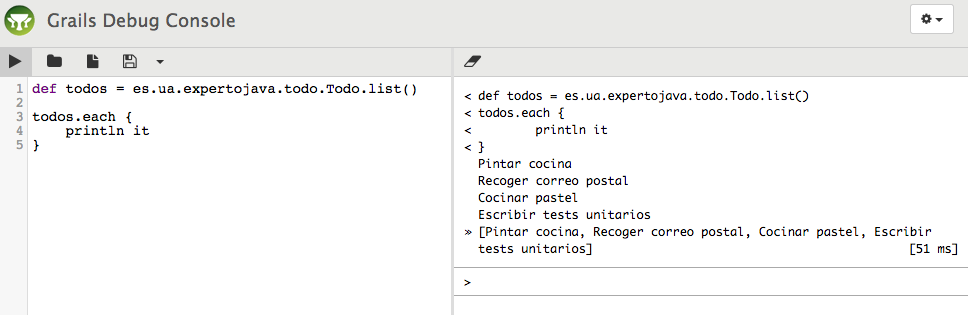
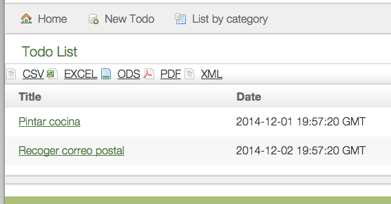

Framework Grails
Sesión 8: Configuración de aplicaciones. Plugins interesantes
Índice
- Configuración de aplicaciones
- Empaquetamiento de aplicaciones
- Otros comandos interesantes
- Plugins
Configuración de aplicaciones
- El archivo Config.groovy
- Sistema de logs
- El archivo BuildConfig.groovy
- El archivo DataSource.groovy
- El archivo Bootstrap.groovy
- El archivo UrlMappings.groovy
El archivo Config.groovy
- grails.config.locations
- grails.project.groupId
- grails.views.default.codec
- grails.controllers.defaultScope
- grails.views.gsp
- grails.converters.encoding
- grails.scaffolding.templates.domainSuffix
- grails.mime.types
Sistema de logs
log4j.main = {
error 'org.codehaus.groovy.grails.web.servlet', // controllers
'org.codehaus.groovy.grails.web.pages', // GSP
'org.codehaus.groovy.grails.web.sitemesh', // layouts
'org.codehaus.groovy.grails.web.mapping.filter', // URL mapping
'org.codehaus.groovy.grails.web.mapping', // URL mapping
'org.codehaus.groovy.grails.commons', // core / classloading
'org.codehaus.groovy.grails.plugins', // plugins
'org.codehaus.groovy.grails.orm.hibernate', // hibernate integration
'org.springframework',
'org.hibernate',
'net.sf.ehcache.hibernate'
}
Niveles de log
- off
- fatal
- error
- warn
- info
- debug
- trace
- all
Artefactos de Grails
log4j.main = {
// Establecemos el nivel info para todos los artefactos de la aplicación
info "grails.app"
// Especificamos el nivel debug para el controlador de la clase Tag
debug "grails.app.controllers.es.ua.expertojava.todo.TagController"
// Especificamos el nivel error para el servicio de la clase Todo
error "grails.app.services.es.ua.expertojava.todo.TodoService"
// Especificamos el nivel para todas las librerías de etiquetas
info "grails.app.taglib"
}
Tipos de artefactos
- conf
- filters
- taglib
- services
- controllers
- domain
Ejemplo
log4j.main = {
appenders {
file name:'file', file:'mylog.log'
}
}
Ejemplo
trace file: "grails.app.controllers.es.ua.expertojava.todo.CategoryController"
Ejemplo
def index() {
log.trace("Método index del controlador CategoryController")
params.max = Math.min(max ?: 10, 100)
respond Category.list(params), model:[categoryInstanceCount: Category.count()]
}
Ejemplo
2015-03-28 12:05:08,549 ["http-bio-8080"-exec-1] TRACE es.ua.expertojava.todo.CategoryController -
Método index del controlador CategoryController
El archivo BuildConfig.groovy
- grails.servlet.version
- grails.project.class.dir
- grails.project.test.class.dir
- grails.project.test.reports.dir
- grails.project.target.level
- grails.project.war.file
- grails.project.fork
- grails.project.dependency.resolution
- grails.project.dependency.resolution.plugins
El archivo DataSource.groovy
- 3 entornos: desarrollo, test y producción
- Configuración diferentes para cada entorno
DataSource.groovy
dataSource {
pooled = true
jmxExport = true
driverClassName = "org.h2.Driver"
username = "sa"
password = ""
}
hibernate {
cache.use_second_level_cache = true
cache.use_query_cache = false
// cache.region.factory_class = 'net.sf.ehcache.hibernate.EhCacheRegionFactory' // Hibernate 3
cache.region.factory_class = 'org.hibernate.cache.ehcache.EhCacheRegionFactory' // Hibernate 4
singleSession = true // configure OSIV singleSession mode
flush.mode = 'manual' // OSIV session flush mode outside of transactional context
}
// environment specific settings
environments {
development {
dataSource {
dbCreate = "create-drop" // one of 'create', 'create-drop', 'update', 'validate', ''
url = "jdbc:h2:mem:devDb;MVCC=TRUE;LOCK_TIMEOUT=10000;DB_CLOSE_ON_EXIT=FALSE"
}
}
test {
dataSource {
dbCreate = "update"
url = "jdbc:h2:mem:testDb;MVCC=TRUE;LOCK_TIMEOUT=10000;DB_CLOSE_ON_EXIT=FALSE"
}
}
production {
dataSource {
dbCreate = "update"
url = "jdbc:h2:prodDb;MVCC=TRUE;LOCK_TIMEOUT=10000;DB_CLOSE_ON_EXIT=FALSE"
properties {
// See http://grails.org/doc/latest/guide/conf.html#dataSource for documentation
jmxEnabled = true
initialSize = 5
maxActive = 50
minIdle = 5
maxIdle = 25
maxWait = 10000
maxAge = 10 * 60000
timeBetweenEvictionRunsMillis = 5000
minEvictableIdleTimeMillis = 60000
validationQuery = "SELECT 1"
validationQueryTimeout = 3
validationInterval = 15000
testOnBorrow = true
testWhileIdle = true
testOnReturn = false
jdbcInterceptors = "ConnectionState"
defaultTransactionIsolation = java.sql.Connection.TRANSACTION_READ_COMMITTED
}
}
}
}
Arranque por entorno
- Desarrollo: grails dev run-app o grails run-app
- Test: grails test run-app
- Producción: grails prod run-app
Mysql
production {
dataSource {
dbCreate = "update"
url = "jdbc:mysql://localhost:3306/todo?useUnicode=true&characterEncoding=UTF-8"
username = "userprod"
password = "pwdprod"
properties {
// See http://grails.org/doc/latest/guide/conf.html#dataSource for documentation
jmxEnabled = true
initialSize = 5
maxActive = 50
minIdle = 5
maxIdle = 25
maxWait = 10000
maxAge = 10 * 60000
timeBetweenEvictionRunsMillis = 5000
minEvictableIdleTimeMillis = 60000
validationQuery = "SELECT 1"
validationQueryTimeout = 3
validationInterval = 15000
testOnBorrow = true
testWhileIdle = true
testOnReturn = false
jdbcInterceptors = "ConnectionState"
defaultTransactionIsolation = java.sql.Connection.TRANSACTION_READ_COMMITTED
}
}
}
Driver Mysql
grails.project.dependency.resolution = {
...
dependencies {
runtime 'mysql:mysql-connector-java:5.1.34'
}
....
}
Opciones dbCreate
- create-drop
- create
- update
- validate
- otro valor
El archivo Bootstrap.groovy
- Ahorra tiempo
- init()
- destroy()
- Diferentes entornos
Driver Mysql
import grails.util.Environment
class BootStrap {
def init = { servletContext ->
switch (Environment.current) {
case Environment.DEVELOPMENT:
configuracionDesarrollo()
break
case Environment.PRODUCTION:
configuracionProduccion()
break
case Environment.TEST:
configuracionTest()
break
}
}
def destroy = {
switch (Environment.current) {
case Environment.DEVELOPMENT:
salirDesarrollo()
break
case Environment.PRODUCTION:
salirProduccion()
break
case Environment.TEST:
salirTest()
break
}
}
}
El archivo UrlMappings.groovy
class UrlMappings {
static mappings = {
"/$controller/$action?/$id?(.$format)?"{
constraints {
// apply constraints here
}
}
"/"(view:"/index")
"500"(view:'/error')
}
}
Tareas por usuario
"/todos/$username"(controller:"todo",action:"showTodosByUser")
"/$username"{
controller = "todo"
action = "showtodosbyuser"
}
Internacionalización
"/tarea/$action?/$id?(.$format)?"{
controller = "tarea"
}
"/usuario/$action?/$id?(.$format)?"{
controller = "user"
}
Restricciones
"/$year/$month/$day" {
controller = "todo"
action = "showtodosbyday"
constraints {
year(matches:/\d{4}/)
month(matches:/\d{2}/)
day(matches:/\d{2}/)
}
}
Códigos de error
"404"(view:'/error')
"404"(controller:'error', action:'notFound')
Reescritura de URLs
static mappings = {
"/$blog/$year?/$month?/$day?/$id?"(controller:"blog", action:"show")
}
Reescritura de URLs
<g:link controller="blog" action="show" params="[blog:'fred', year:2014]">
My Blog
</g:link>
<g:link controller="blog" action="show" params="[blog:'fred', year:2014, month:10]">
My Blog - October 2014 Posts
</g:link>
Reescritura de URLs
<a href="/fred/2014">My Blog</a>
<a href="/fred/2014/10">My Blog - October 2014 Posts</a>
Empaquetamiento de aplicaciones
- Actualizar repositorio
- Tests
- Incrementar version app.version
- grails clean
- Generar war grails prod war
Servidores de aplicaciones
- JBoss
- GlassFish
- Apache Geronimo
- BEA WebLogic
- IBM WebSphere
- Apache Tomcat
- Jetty
Otros comandos interesantes
- grails bug-report
- grails clean
- grails console
- grails doc
- grails help
- grails list-plugins
- grails plugin-info
- grails run-app -https
- grails schema-export
- grails set-version
- grails stats
- grails uninstall-plugin
Plugins
- Plugin console
- Plugin Searchable
- Plugin export
Plugin console
- Ejecución en línea de comandos
- Acceso a contextos: aplicación o clases de dominio
Instalación plugin console
grails install-plugin console
grails.project.dependency.resolution {
...
plugins {
...
compile ":console:1.5.4"
}
}
A tener en cuenta
- http://localhost:8080/todo/console
- Aplicación asegurada
Acceso al plugin console
grails.plugin.springsecurity.controllerAnnotations.staticRules = [
"/console/**": ['ROLE_ADMIN'],
"/plugins/console*/**": ['ROLE_ADMIN']
]
Interfaz plugin console

Variables en el plugin console
- ctx
- grailsApplication
- config
- request
- session
Ejemplos de uso del plugin console
Todo todo = es.ua.expertojava.todo.Todo.get(1)
ctx.todoService.deleteTodo(todo)
Plugin Searchable
- Tareas de búsqueda
- Basado en Compass
- Utiliza Apache Lucene
Instalación plugin searchable
grails.project.dependency.resolution = {
...
repositories {
...
mavenRepo "http://repo.grails.org/grails/core"
}
plugins {
...
compile ":searchable:0.6.9"
}
}
Buscador generado
- http://localhost:8080/todo/searchable
Buscador de tareas
package es.ua.expertojava.todo
class Todo {
String title
String description
Date date
Date reminderDate
String url
Boolean done = false
Category category
Date dateCreated
Date lastUpdated
Date dateDone
User user
static searchable = true
...
}
Restringir la búsqueda
static searchable = [only: ['title', 'description']]
static searchable = [except: 'date', 'reminderDate']
Problemas con Hibernate 4
runtime ":hibernate4:4.3.5.5" // or ":hibernate:3.6.10.17"
//cache.region.factory_class = 'net.sf.ehcache.hibernate.EhCacheRegionFactory' // Hibernate 3
cache.region.factory_class = 'org.hibernate.cache.ehcache.EhCacheRegionFactory' // Hibernate 4
SearchableService
- search, https://grails.org/Searchable+Plugin+-\+Methods+-+search
- countHits, https://grails.org/Searchable+Plugin+-\+Methods+-+countHits
- moreLikeThis, https://grails.org/Searchable+Plugin+-\+Methods+-+moreLikeThis
- suggestQuery, https://grails.org/Searchable+Plugin+-\+Methods+-+suggestQuery
- termsFreqs, https://grails.org/Searchable+Plugin+-\+Methods+-+termFreqs
Ejemplo con SearchableService
def searchResult = searchableService.search(
"Tests",
[offset: 0, max: 20]
)
println "${searchResult.total} hits:"
for (i in 0..<searchResult.results.size()) {
println "${searchResult.offset + i + 1}: " +
"${searchResult.results[i].toString()} " +
"(score ${searchResult.scores[i]})"
}
Ejemplo con SearchableService
//Devuelve un único objeto de tipo Todo
//que coincidan con la búsqueda realizada
def todo = Todo.search(
"Tests",
[result: 'top']
)
assert todo instanceof Todo
//Devuelve todos los objetos de tipo Todo
//que coincidan con la búsqueda realizada
def todos = Todo.search(
"Tests",
[reload: true, result: 'every']
)
assert todos.each { it instanceof Todo }
Filtrar por parámetro
def todos = Todo.search([result:'every']) {
must(queryString(params.q))
must(term('$/Todo/category/id',Category.findByName("Hogar")?.id))
}
Plugin export
- Exportar a otros formatos: excel, pdf, csv, etc.
Instalación plugin export
grails.project.dependency.resolution = {
...
repositories {
...
mavenRepo "http://repo.grails.org/grails/core"
}
dependencies {
...
compile 'commons-beanutils:commons-beanutils:1.8.3'
}
plugins {
...
compile ":export:1.7-SNAPSHOT"
}
}
Configuración plugin export
grails.mime.types = [
all: '*/*',
atom: 'application/atom+xml',
css: 'text/css',
csv: 'text/csv',
pdf: 'application/pdf',
excel: 'application/vnd.ms-excel',
ods: 'application/vnd.oasis.opendocument.spreadsheet',
form: 'application/x-www-form-urlencoded',
html: ['text/html','application/xhtml+xml'],
js: 'text/javascript',
json: ['application/json', 'text/json'],
multipartForm: 'multipart/form-data',
rss: 'application/rss+xml',
text: 'text/plain',
hal: ['application/hal+json','application/hal+xml'],
xml: ['text/xml', 'application/xml']
]
Uso del plugin export
- Incluir etiqueta <export:resource/>
- Incluir etiqueta <export:formats />
- Especificar que formatos queremos <export:formats formats="['csv','excel','ods','pdf','xml']"/>
Ejemplo del plugin export
<html>
<head>
...
<export:resource/>
</head>
<body>
...
<h1><g:message code="default.list.label" args="[entityName]" /></h1>
<g:if test="${flash.message}">
<div class="message" role="status">${flash.message}</div>
</g:if>
<export:formats formats="['csv', 'excel', 'ods', 'pdf', 'xml']" />
...
</body>
</html>
Interfaz de usuario del plugin export

Cambios en el controlador
package es.ua.expertojava.todo
import static org.springframework.http.HttpStatus.*
import grails.transaction.Transactional
@Transactional(readOnly = true)
class TodoController {
def todoService
def springSecurityService
def exportService
static allowedMethods = [save: "POST", update: "PUT", delete: "DELETE"]
def index(Integer max) {
params.max = Math.min(max ?: 10, 100)
if(params?.f && params.f != "html"){
response.contentType = grailsApplication.config.grails.mime.types[params.f]
response.setHeader("Content-disposition", "attachment; filename=todos.${params.extension}")
exportService.export(params.f, response.outputStream, Todo.findAllByUser(springSecurityService.currentUser, params), [:], [:])
}
respond Todo.findAllByUser(springSecurityService.currentUser, params), model:[todoInstanceCount: Todo.countByUser(springSecurityService.currentUser)]
}
...
}
Mejoras en la forma de exportar
def index(Integer max) {
params.max = Math.min(max ?: 10, 100)
if(params?.f && params.f != "html"){
response.contentType = grailsApplication.config.grails.mime.types[params.f]
response.setHeader("Content-disposition", "attachment; filename=todos.${params.extension}")
List props = ["title", "description", "date", "url", "done"]
Map tags = ["title":"Título",
"description":"Descripción",
"date":"Fecha",
"url":"URL",
"done":"Hecho"]
// Closure formateador
def uppercase = { domain, value -> return value.toUpperCase() }
Map formatters = [title: uppercase]
Map parameters = [title: "LISTADO DE USUARIOS"]
exportService.export(params.f, response.outputStream,
Todo.findAllByUser(springSecurityService.currentUser, params), props, tags,
formatters, parameters)
}
respond Todo.findAllByUser(springSecurityService.currentUser, params), model:[todoInstanceCount: Todo.countByUser(springSecurityService.currentUser)]
}
Internacionalizar el plugin export
default.csv = CSV
default.excel = EXCEL
default.pdf = PDF
default.xml = XML
default.ods = ODS